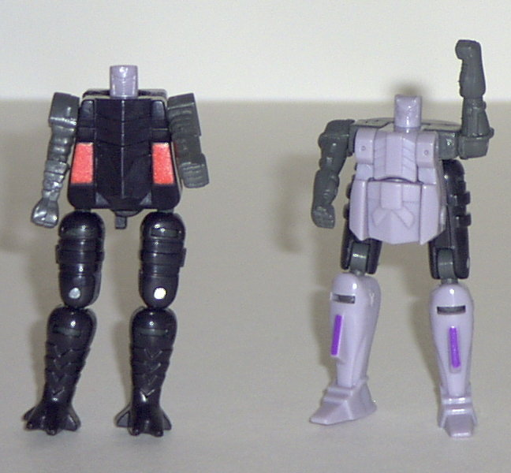
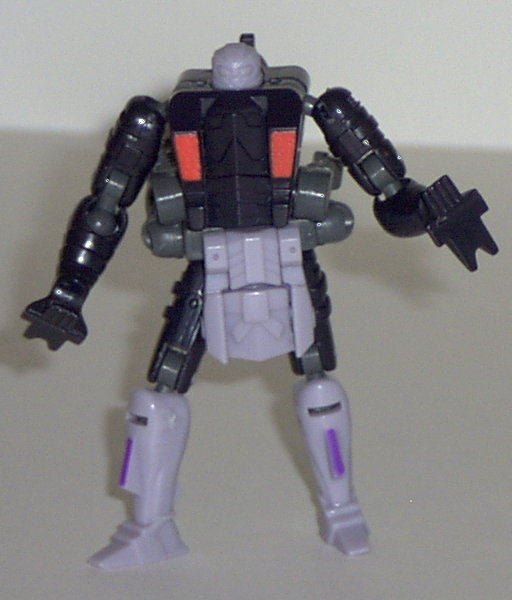
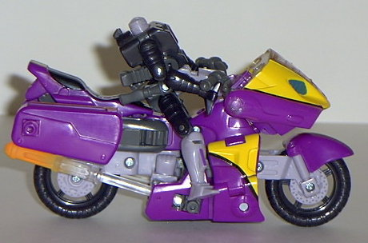
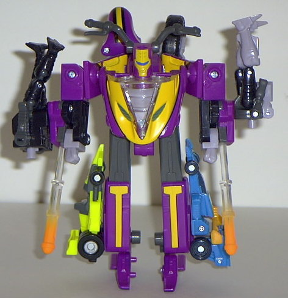
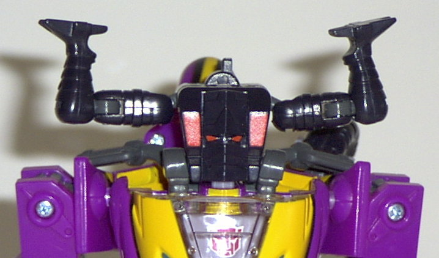
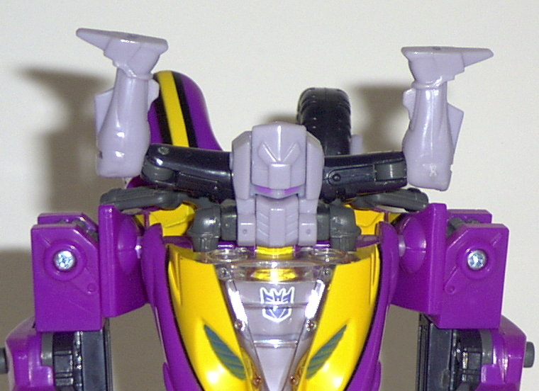

Sideways
w/ Crosswise & Rook
Sideways
w/ Crosswise & Rook
 Crosswise
& Rook
Crosswise
& Rook


Allegiance
: Minicon
Size
: Mini-Con
Difficulty of Transformation
: Easy
Color Scheme (Crosswise)
: Black,
dark gray, lavender, and some purple
Color Scheme (Rook)
: Black, dark
gray, and some lavender and red
Rating (Crosswise)
: 4.7
Rating (Rook)
: 4.3
Because both Crosswise
& Rook are essential parts of each other (and of Sideways, for that
matter), I'll be reviewing both of these little Minicons together.
Crosswise (the lavender
one) has an oddly proportioned individual robot mode, but then again, this
is an odd Minicon. His legs make up roughly 7/8ths of his total height,
although this is masked some by his "loincloth" that makes up both his
chest and covers most of the upper part of his legs some. He also has a
rather tiny head when compared with the rest of his body- not to mention
he could use some paint detailing, as he only has a couple of purple-painted
parts here and there. He has rather nice articulation, though- shoulder,
hip, knee (at two points), and "loincloth" articulation. No, there certainly
couldn't be any crude innuendo associated with a loincloth that you can
lift, no sir... Crosswise has a little "tab" sticking out of his... er...
crotch... that will hold him in place somewhat well if you place him in
Sideways' motorcycle seat. His Minicon port is on his butt, by the way,
and he is oddly bereft of any Minicon symbol.
Rook (the black one)
has almost the same overall construction and aesthetic as Crosswise, including
many of the same problems- little paint articulation, overly long legs,
and the like. He also has identical articulation, and his Minicon port
is on the same place (his butt). Also, he has a little tab on his rump
to hold him on if you place him on Sideways' motorcycle seat, like Crosswise,
and he has no Minicon symbol. However, what makes Rook inferior to Crosswise
is that his legs are oddly placed. They don't really have any set position
like Crosswise's, and they aren't hidden by anything either, so they really
look ridiculously long and thin.
Although both Crosswise
and Rook have individual "alt" modes of their own (they can become alternate
heads for Sideways), these will be discussed below in Sideways' part of
the review. For now, I'm going to concentrate on what happens when Crosswise
and Rook combine- you get a larger 'bot that can ride Sideways (while not
looking ridiculously small while doing so)! Oddly enough, this rider (he
has no name) bears a striking resemblance to the original
Beast
Wars Spittor
toy, in his overall lankiness and face structure. He's
also incredibly articulated- he has waist, hip, knee (at two points), shoulder
(at two points), and elbow articulation (also at two points). In fact,
if it wasn't for the fact that his feet are a little small, you could get
a ton of neat poses out of this guy. My only problem with him is that Rook
and Crosswise's robot arms just stick out at his waist, with no attempt
to camoflauge them. His hands also have feet sticking out of the back of
them... But other than that, this makes Crosswise and Rook's weird individual
robot modes worth it!
Sideways


Allegiance
: Autobot or Decepticon;
or neither, it's your choice.
Size
: Super-Con
Difficulty of Transformation
: Medium
Color Scheme
: Fuchsia, yellow, lavender,
dark gray, black, and some bright orange, sparkly aquamarine, dark blue,
and clear plastic
Powerlinx ports
: 4 (2 gimmicked)
Rating
: 8.0
Vehicle mode is a futuristic
motorcycle. When I look at this mode, the first thing that comes to mind
is "
Beast Machines Thrust
". Not only is the coloring
nearly identical, but some features are practically the same: the arms
essentially become the gas pipes, and the front has a "face" look to it.
However, that's not to say that Sideways isn't his own toy, as that's certainly
not the case. He has a pretty solid motorcycle seat, some handlebars, and
enough balance where he just barely leans to one side if you let him stand
on his own in this mode. However, the lower front panels of the motorcycle-
the pieces that make up his arms and shoulders in robot mode- have no place
to "lock" into in this mode, and are awkward in their placement. The fact
that the main central piece of the motorcycle gets in their way a bit doesn't
help either. If this still seems vague to you, it'll become more apparent
once you get the toy- it's a bit hard to explain in words. And although
is paint detailing is excellent, his mold detailing is sorely lacking,
especially when compared to the other Armada toys. In fact, in most areas
it's positively simplistic. What pretty much redeems the motorcycle mode,
though, is that it comes with its own rider, which fits somewhat snugly
into his seat via the tab discussed earlier. In fact, Sideways has TWO
tabs, so both Crosswise and Rook can ride him at the same time in their
individual forms!


Sideways' robot mode
is... so-so. While the proportions are all well and good, the mold detailing
is still bad, and his articulation is substandard even for an Armada toy-
only his shoulders, hands, and hips can move. So he ends up looking rather
stiff and inhuman. (Well, he's not a human, but... you get my point.) His
head also looks a bit weird, seeing as how its shape is strictly conical
and he has handlebars coming out of the sides. His feet also look a tad
oddly-figured, seeing as how they're the halves of the motorcycle seat.
The wheels on his back would have complemented the mode, if they weren't
asymmetrical- one has a cover, while one doesn't. And, although it's not
directly apparent front picture, his head and chest hang out a bit forward
from the rest of his body. As for Sideways' Minicon gimmick, it's simple
and straightforward- attach a Minicon to one of his arm ports, push forward,
and the missile is fired. (Although I think those missiles stick out a
bit too far from their ports, myself.) However, what makes it all good
is Sideways' incredibly unique gimmick- depending on which Minicon to attach
in on top of his collapsed head, he becomes either an Autobot or Decepticon!
When you attack Rook to his head in "mask mode", Sideways' chest reveals
an Autobot symbol, whereas if you attack Crosswise in his own "mask mode",
the chest reveals a Decepticon symbol! Gravy! Although I do have to say
that the Minicon heads look a little weird, having their legs splayed out
like that. I prefer to tuck them behind the head, as that looks better-
but that's not what the instructions say to do, which is why they're pictured
the way they are above.
Sideways has a pretty
neat vehicle mode, but only a mediocre robot mode. However, what pushes
this toy up from being just "so-so" to being "pretty cool" is his Minicon
allegiance-switching gimmick, which is THE most inventive gimmick EVER
used on a Transformer. So, even though Sideways isn't exactly the cream
of the Armada crop, I still recommend him.
Sideways Bio
:
MOTTO: "Efficiency through self-sufficiency."
Sideways is a conscientious, ninja-like
warrior who races to battle. Disguised as a sports bike he exceeds speeds
of 250mph. Mysterious and silent, he reveals little about himself except
a fierce drive to confront the enemy and quickly return to Cybertron. On
Earth, he undergoes a personality change that gives him both a good and
a bad side based on Mini-con influence. This split makes him highly unpredictable.
It's hard to predict which half of his split personality will win in the
end - the good side or the evil side!
Strength: 4.0
Intelligence: 6.0
Speed: 6.0
Endurance: 5.0
Rank: 6.0
Courage: 8.0
Fireblast: 6.0
Skill: 8.0
Review by Beastbot
(NOTE: Some of the earliest batches of Sideways had Rook and Crosswise's
allegiance-changing properties switched- that is, Rook made Sideways a
Decepticon, whereas Crosswise made Sideways an Autobot. Crosswise also
had red paint apps, whereas Rook had the purple ones. The mistake was soon
corrected, though. [Even though you'd think that would be the correct configuration....])
Back to Transformers:
Armada Index